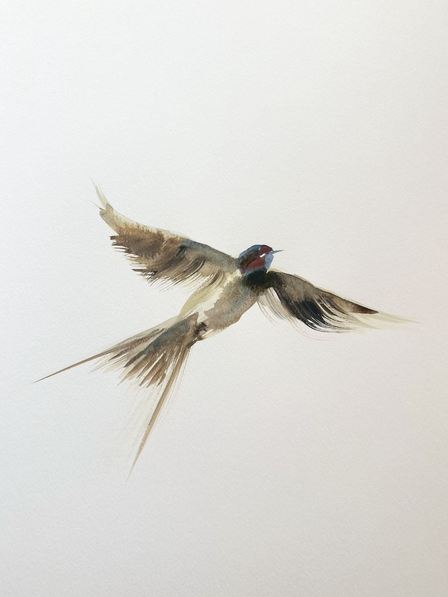
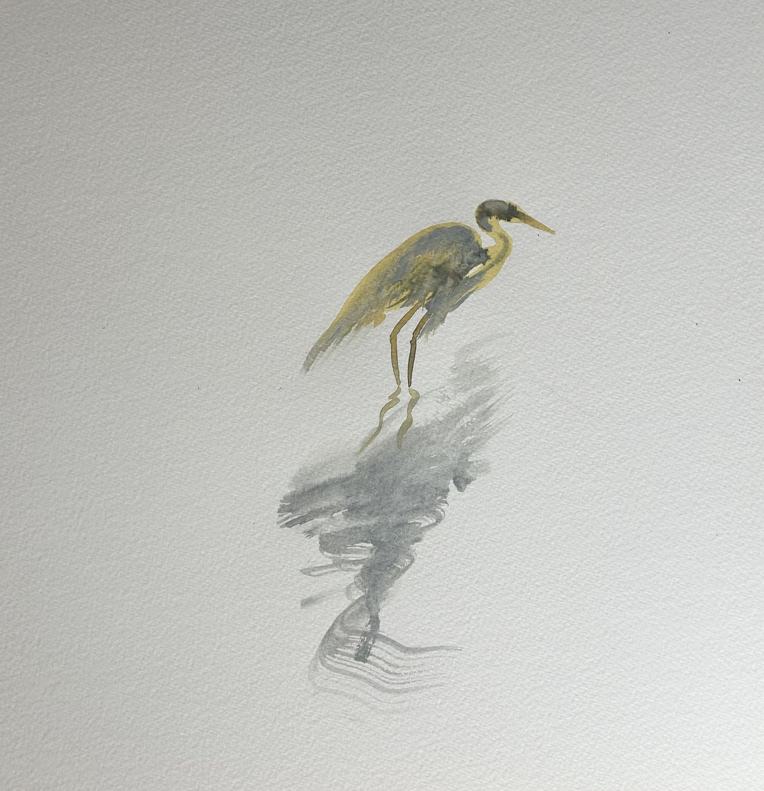
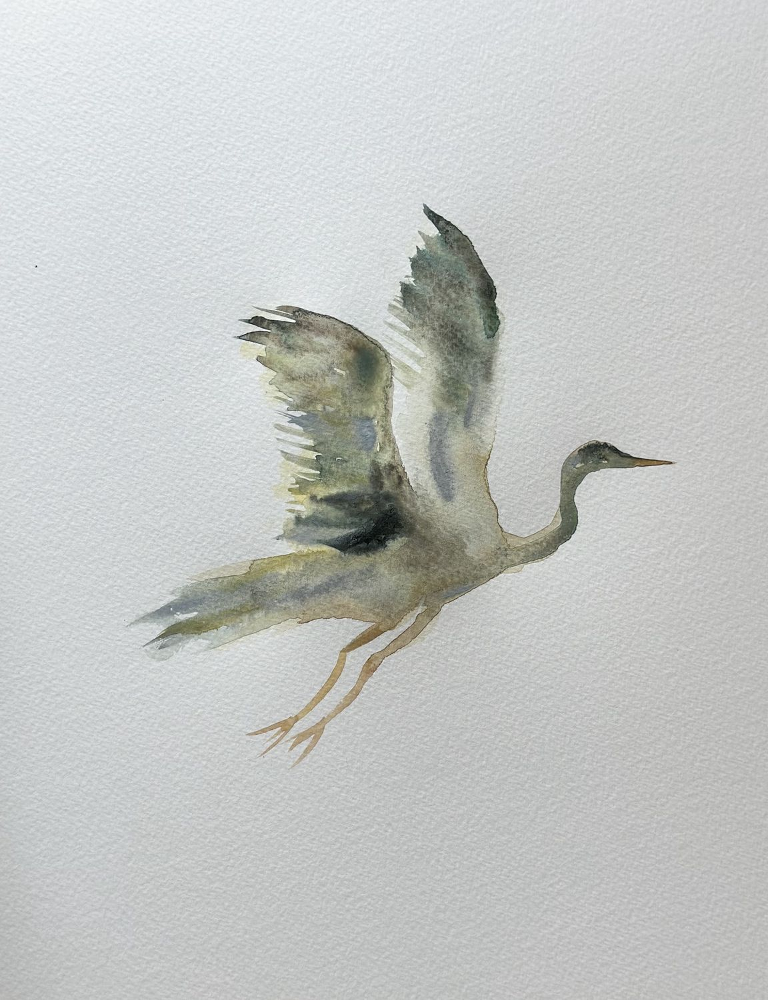
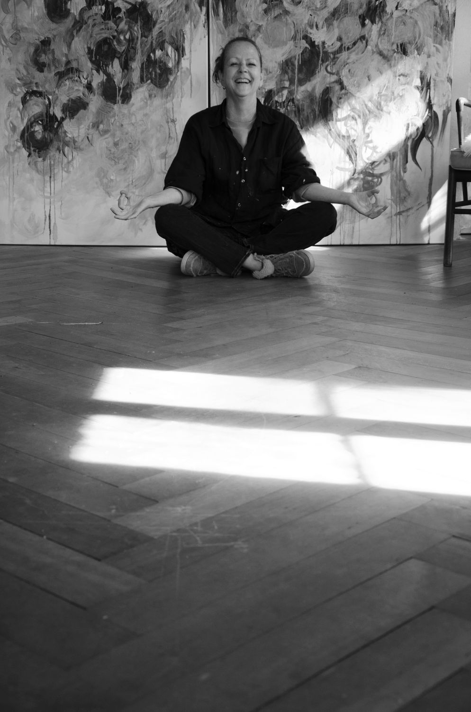

Acquerelli su carta · 2026Watercolours on paper · 2026
Ute Kern Panella La Via degli uccelliThe Way of Birds
Vi sono correnti invisibili. E gli uccelli le attraversano seguendo minime variazioni, della luce e dell’aria.There are invisible currents. Birds move through them, following subtle shifts in light and air.

OpereWorks
Acquerello su cartaWatercolour on paper
Nella luce dello studioIn the studio light
LuganoLugano

Nello stesso ventoIn the same wind
La Via degli uccelliThe Way of Birds
Vi sono correnti invisibili.
E gli uccelli le attraversano seguendo minime variazioni, della luce e dell’aria. Si muovono tra terra e cielo, tra presenza e distanza, affidandosi a qualcosa che noi non vediamo.
Già nelle antiche culture e nelle tradizioni sciamaniche, certi animali erano considerati vere guide spirituali: presenze potenti, messaggeri tra il visibile e l’invisibile capaci di accompagnare l’essere umano e di proteggerlo.
Essi ci appaiono nei sogni, nelle storie, nelle affinità improvvise. A volte li incontriamo semplicemente e, senza sapere perché, qualcosa in noi li riconosce.
L’animale guida non è qualcosa da possedere né un simbolo da decifrare. È una presenza da incontrare, con cui entrare in relazione: esso può apparire per un istante, lasciare una traccia, aprirci ad una domanda, suggerirci una risposta, un movimento.
La Via degli uccelli nasce da questo incontro.
Non è mio unico desiderio rappresentare gli uccelli, bensì avvicinarmi a ciò che la loro presenza evoca: il volo, la migrazione, il ritorno, il nido, la sospensione, la possibilità di cambiare rotta.
Gli uccelli sembra che conoscano vie che noi non vediamo, seguono correnti invisibili, si affidano all’aria, percepiscono variazioni quasi impercettibili. Nel loro movimento io vi riconosco una forma di orientamento che non passa necessariamente attraverso la ragione, bensì attraverso l’ascolto.
L’acquerello risponde a questo stesso ascolto. L’acqua porta il colore, lo disperde, lo lascia affiorare. La forma appare e si sottrae, rimane in bilico tra ciò che si riconosce e ciò che ancora non ha forma e nome.
Ogni foglio è una piccola soglia.
Un gesto che cerca la leggerezza ma senza negare la materia. Una traccia nell’aria. Una presenza che si manifesta e poi si dissolve. Un movimento che continua oltre il margine della carta.
Forse gli animali guida ci ricordano proprio questo, che non tutto ciò che ci orienta è visibile. Che possiamo imparare a fidarci di correnti sottili, di segnali quasi impercettibili, inaspettati, di qualcosa che ancora non sappiamo nominare.
Lasciare che il volo di un uccello ci pervada.
Accogliere per un istante il suo passaggio, senza trattenerlo, senza volerlo spiegare.
E, forse, riconoscere nel suo movimento qualcosa del nostro: tra ciò che lasciamo e ciò che ancora non conosciamo, tra il bisogno di una via e la libertà di cambiare rotta.
Ute Kern Panella, 2026
There are invisible currents.
Birds move through them, following subtle shifts in light and air. They travel between earth and sky, between presence and distance, trusting something we cannot see.
In ancient cultures and shamanic traditions, certain animals were regarded as spiritual guides: powerful presences capable of accompanying human beings as protectors and messengers between the visible and the invisible.
They appear in dreams, in stories, in sudden affinities. At times, we simply encounter them and, without knowing why, something within us recognises them.
A spirit animal is not something to possess, nor a symbol to decipher. It is a presence to encounter, something with which to enter into relationship. It may appear for an instant, leaving a trace, opening a question, suggesting a movement.
The Way of Birds grows out of such an encounter.
I am not interested in depicting birds, but in approaching what their presence evokes: flight, migration, return, suspension, the possibility of changing course.
Birds seem to know pathways we cannot see. They follow invisible currents, trust the air, sense almost imperceptible changes. In their movement, I recognise a form of orientation that does not necessarily come through reason, but through listening.
Watercolour responds to this same act of listening. Water carries colour, disperses it, allows it to rise to the surface. Forms emerge and recede, remaining poised between what can be recognised and what has yet to be named.
Each painting is a small threshold.
A gesture seeking lightness without denying matter. A trace in the air. A presence that appears and then dissolves. A movement that continues beyond the edge of the paper.
Perhaps spirit animals remind us of this: that not everything that guides us can be seen. That we can learn to trust subtle currents, almost imperceptible signs, something we do not yet know how to name.
To let a bird pass through us.
To receive its passing for an instant, without holding on to it, without needing to explain it.
And perhaps to recognise, in its movement, something of our own: between what we leave behind and what we have yet to discover, between the need for a path and the freedom to change course.
Ute Kern Panella, 2026

Animali guida
Text in Italian
Spirit animals
Da sempre gli animali sono intesi come compagni dell’anima - guide, protettori e messaggeri che riflettono qualità che stiamo imparando a incarnare. L’animale spirito non è qualcosa da possedere, ma da incontrare: una presenza che appare nei sogni, si manifesta nelle affinità improvvise o in un riconoscimento silenzioso, aiutandoci ad affinare l’intuizione e ad attraversare il cambiamento.
Questo progetto si inaugura con gli uccelli.
Creature dell’aria e della soglia si muovono tra terra, acqua e cielo, portando con sé una percezione di prospettiva, transizione e consapevolezza. Incontrare un uccello come guida significa chiedersi cosa in noi desideri sollevarsi, migrare, tornare a cantare.
Gli uccelli abitano la liminalità, muovendosi lungo correnti invisibili e affidandosi alla sottigliezza dell’aria per orientarsi. Li percepisco come presenze che tracciano linee invisibili nello spazio, coordinate per un orientamento interiore.
Nel mio lavoro diventano materia sospesa, ritmo, scrittura nello spazio. Non cerco di rappresentarli, ma di evocare lo stato che incarnano. Le opere dedicate agli uccelli nascono da questo ascolto: come presenze di passaggio, invitano chi le osserva a percepire il proprio movimento, la propria migrazione.
Questa serie si presenta come un’estensione essenziale della mia ricerca sulla presenza, la soglia e l’orientamento interiore.
Gli uccelli non sono trattati come soggetti, ma come figure essenziali che tracciano direzioni sottili, quasi coordinate nello spazio. Attraverso l’acquerello su carta, la serie accoglie la leggerezza e la dispersione del gesto, permettendo alle forme di rimanere sospese, mai completamente fisse.
Questi lavori diventano silenziosi strumenti di orientamento. Non rappresentano il movimento, ma lo attivano, invitando chi guarda a percepire la propria posizione mutevole.
In dialogo con le mie installazioni, la serie riduce la stessa indagine a una scala essenziale, in cui un singolo gesto racchiude la tensione tra presenza e scomparsa.
Ute Panella, 2026

BiografiaAbout
Ute Kern Panella è un’artista visiva che vive e lavora a Lugano. Si è formata tra Stoccarda e Londra, alla Free Art School, al London College of Fashion e alla Central Saint Martins (BA Fine Art). Il suo percorso attraversa le arti visive, la moda e il design calzaturiero, e la pratica e l’insegnamento dello yoga. Dal 2017 è artista in residenza presso la Fondazione Claudia Lombardi a Figino, Lugano.
Ute Kern Panella is a visual artist who lives and works in Lugano. She trained in Stuttgart and London, at the Free Art School, the London College of Fashion and Central Saint Martins (BA Fine Art). Her path runs through visual art, fashion and footwear design, and the practice and teaching of yoga. Since 2017 she has been artist in residence at the Fondazione Claudia Lombardi in Figino, Lugano.
Lingue: italiano, inglese, tedesco.Languages: English, Italian, German.
ContattiContact
StudioStudio